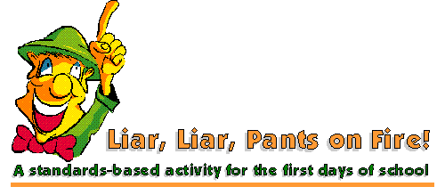

|  | ||
The first days of school set the tone for the rest of the year. Students want to get to know their teachers; teachers want to get to know their students. This activity helps everyone get acquainted. It also supports standards in speaking.
Step One
Students briefly discuss which is which with a partner. As a class, they vote on their choices; then the teacher reveals which are true.
Step Two
Step Three
Step Four
|
||
This rubric was designed for Indiana Standards 2000 9.7.14. Permission is granted for teachers to download and use it in an educational setting. Commercial use is prohibited.
|
||
This activity was inspired by an idea shared on the NCTE ListServ. I don't remember which teacher to credit; instead, I will recommend the List as a generous source of information, support and inspiration for anyone who teaches English/Language Arts. |
||